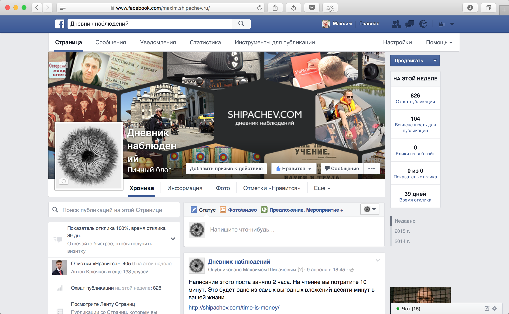

Подавляющее большинство начинающих SMM-щиков допускают одну и ту же ошибку. Регистрируют страницу своей организации как персону.
Отсюда мы имеем в друзьях Стадион Химик Кемерово, Артфабрика Подарки, Бенедикт Новокузнецк, Есть Идея Так Гринвич и прочие Яна Горящий Тур.
Между тем, Фейсбук позволяет совершенно спокойно добавлять неограниченное количество страниц какой угодно направленности уже зарегистрированным персонам. Например, Старые фото Кемерова — одна из созданных таким образом мною страниц.
Другая ошибка, которую допускает уже меньшее количество людей — создавать группу там, где необходима страница. Такую ошибку, кстати, когда-то допустил я, создав для фонда группу «Счастье детям», благотворительный фонд.
Тут важно понимать, что группа в парадигме фейсбука, — это сообщество людей, которые пишут друг для друга, обмениваясь опытом (смешными картинками, новостями политики). Функциональным отличием группы от остальных сущностей в фейсбуке является возможность создавать в группе голосования.
Страница же — обладает немного другой функциональностью. Страницу можно лайкать, как, к примеру Дневник наблюдений, выражая таким образом приверженность компании, от имени страницы можно создавать мероприятия. Лайки можно выводить на сайте компании.

На страницу пишет редактор, в группу пишут все.
Итак, что выбрать: страницу, группы или профиль в фейсбуке?
-
Если вы собираетесь продвигать компанию — создавайте страницу.
-
Если вы собираетесь объединить единомышленников — создавайте группу.
-
Если вы — человек — регистрируйтесь от своего или вымышленного имени.
И никаких Подарки Сувениры Магия Подарка. В том числе и в друзьях. Вы же не кушаете манную кашу калькулятором.